OpenThread NCP Example¶
This application is designed to show how to use the OpenThread Network Co-Processor (NCP) example in embARC. It can serve as a low-power wireless Network Co-Processor (NCP) to communicate with Userspace WPAN Network Daemon (wpantund) on Unix-like operating systems. It can be used along with OpenThread wpantund to provide Internet connectivity to the Thread network.
Hardware and Software Setup¶
Required Hardware¶
2 x DesignWare ARC EM Starter Kit(EMSK), recommended version 2.3
2 x SD card
1 x Raspberry Pi 3 or PC for running OpenThread wpantund
Required Software¶
Metaware or ARC GNU Toolset
Serial port terminal, such as putty, tera-term or minicom
{kind=link}
User Manual¶
Run OpenThread in self-boot mode¶
Two EMSKs will be used as two Thread nodes, one is CLI Node and the other is NCP Node. They are set automatically by OpenThread stack. The following example is to run the OpenThread CLI and NCP in the EMSK self-boot mode with using SD card.
The Digilent PmodRF2 and the self-made MRF24J40 module are both supported.
Use AC adapter to ensure a steady power supply.
Open two Tera Term emulators to connect EMSKs with different COM ports.
The self-boot mode preparation is included in the following steps.
make run is not supported because both EMSK board is v2.3 and it will lead to conflict.
Build and Run OpenThread example¶
Program the secondary bootloader application into onboard SPI Flash.
Go to
\embARC\example\baremetal\bootloaderin command line.Enter make TOOLCHAIN=gnu BD_VER=23 CUR_CORE=arcem7d bin
Select configuration 1 on the EMSK for ARCEM7D by setting all DIP switches to the OFF position.
Insert the SD card to your PC, and copy the binary file
obj_emsk_23/gnu_arcem7d/emsk_bootloader_gnu_arcem7d.binto the SD Card root directory. Rename it toem7d_2bt.binas the secondary bootloader.The bootloader has been modified in embARC. Please perform the following steps to update the bootloader in the EMSK SPI flash.
Update the bootloader in both EMSK boards. The other EMSK board should be updated by performing the same steps.
Connect one EMSK board to the host with USB. Insert the SD Card into the EMSK board SD Card slot.
Go to
\embARC\example\freertos\net\ntshellin command line. Enter make TOOLCHAIN=gnu BD_VER=23 CUR_CORE=arcem7d. Once the application builds successfully, enter make TOOLCHAIN=gnu BD_VER=23 CUR_CORE=arcem7d run in command line to start NT-Shell.
Use NT-Shell command spirw in the terminal window to write the
em7d_2bt.binto SPI flash.run spirw -h to show help.
run spirw -w em7d_2bt.bin 0x17f00000 0x17f00004 to program SPI flash.
Check the output message to see if it is programmed successfully. The process may take some time. If
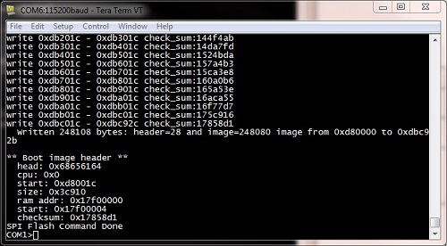WF INIT FAILEDandMRF24G Init Failedis shown in the Tera Term, there is no error since the WiFi module has not been used here.
Generate
boot.binof the OpenThread CLI and NCP example.Go to
\embARC\example\baremetal\openthread\cliand\embARC\example\baremetal\openthread\ncpin command line.Enter make TOOLCHAIN=gnu BD_VER=23 CUR_CORE=arcem7d bin.
Insert SD Card to PC. Copy the generated binary file
obj_emsk_23/gnu_arcem7d/openthread_gnu_arcem7d.binto SD cards root. And rename it toboot.bin. Note that the secondary bootloader can only identifyboot.binin the SD card root.
Run OpenThread CLI and NCP example. Before resetting the EMSK boards, make sure Bit 4 of the onboard DIP switch is ON to enable secondary bootloader to run.
Insert SD Card back to one EMSK. It will run the CLI example. Press the reset button to reboot it. Wait for loading boot.bin from SD card. The response in the terminal window is shown as below.
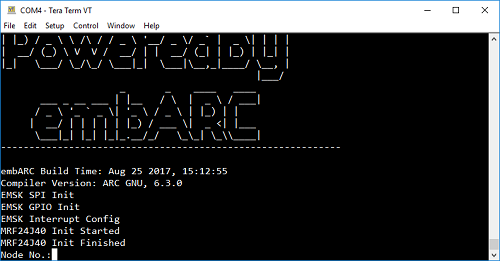Insert the other SD card to the other EMSK. It will run the NCP example. Press the reset button to reboot it. Wait for loading boot.bin from SD card.
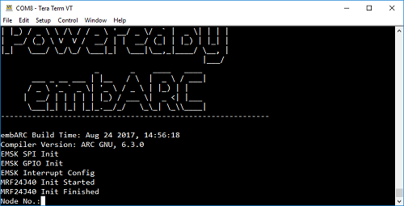Enter 1 and press Enter button in CLI’s Tera Term. Enter 2 and press Enter button in the NCP’s. Enter the number here to generate pseudo random number for OpenThread. Recommend to enter numbers in order, such as 1, 2 and 3. Using same number in different nodes may lead error. The number will not be shown directly in the Tera Term until pressing Enter button from the keyboard.
After entering 2 in the NCP’s Tera Term, the NCP will start up automatically. It will show you some messy code in the last line, just ignore it. And after that this Tera Term won’t be used any more.
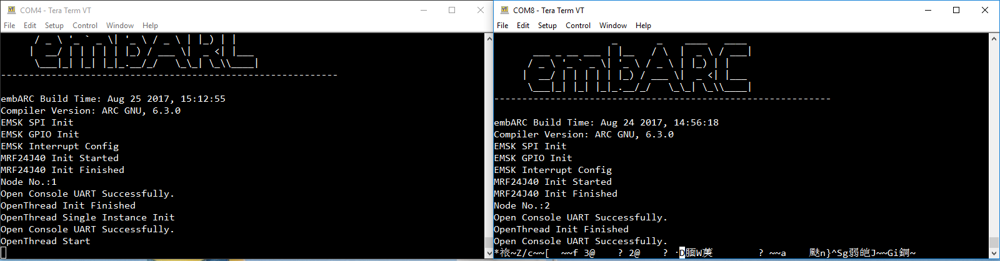Enter the following commands in the CLI’s Tera Term windows.
> panid 0x1234 > ifconfig up > thread start
Wait 20 seconds for completing Thread configuration. Enter “state” to see the state of the node, it will be the leader.
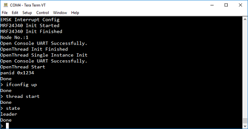
{kind=link}
{kind=link}
{kind=link}
{kind=link}
{kind=link}
Install and Run OpenThread wpantund¶
Download OpenThread wpantund. Install wpantund on the Linux host. Here we take the Ubuntu Desktop 16.04.3 LTS for example.
Install python-software-properties
$ sudo apt-get install -y python-software-properties $ sudo add-apt-repository -y ppa:terry.guo/gcc-arm-embedded $ sudo apt-get update -qq
Install packages needed for wpantund build and runtime
$ sudo apt-get install -y build-essential git make autoconf autoconf-archive automake dbus libtool gcc g++ gperf flex bison texinfo ncurses-dev libexpat-dev python sed python-pip gawk libreadline6-dev libreadline6 libdbus-1-dev libboost-dev $ sudo apt-get install -y --force-yes gcc-arm-none-eabi $ sudo pip install pexpect
Install wpantund
$ cd wpantund $ ./configure --sysconfdir=/etc $ make $ sudo make install
See Simulation Codelab for more detailed information.
Connect NCP to the Linux host via USB cable. Type ls /dev/ to find out which descriptor stands for NCP’s UART interface. Here it is
ttyUSB1. The communication between NCP and wpantund is based on spinel protocol.Run OpenThread wpantund and join the network created by CLI Node.
Run a terminal and type the following commands to start wpantund:
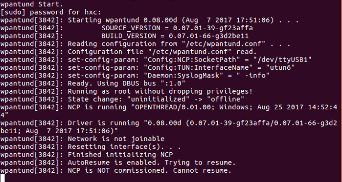sudo /usr/local/sbin/wpantund -o Config:NCP:SocketPath "/dev/ttyUSB1" -o Daemon:SyslogMask " -info" -o Config:TUN:InterfaceName utun6
Run another terminal and type the following commands to enter wpanctl:
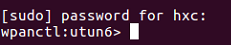sudo /usr/local/bin/wpanctl -I utun6
In the wpanctl, type the following commands to scan and join the Thread network:
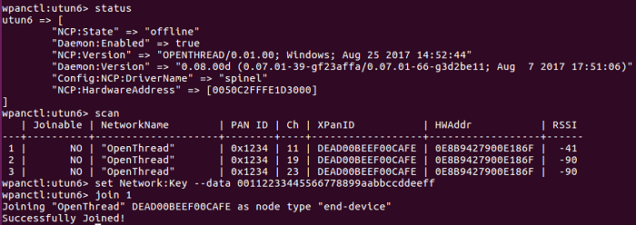wpanctl:utun6> scan wpanctl:utun6> set Network:Key --data masterkey wpanctl:utun6> join 1
Run a terminal on PC and type ifconfig, it will show you some information about a virtual IPv6 network interface (utun6):
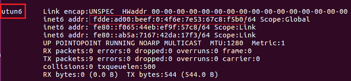Note the IPv6 address, here it is
fdde:ad00:beef:0:4f6e:7e53:67c8:f5b0.
{kind=link}
{kind=link}
{kind=link}
{kind=link}
Ping to each other, the CLI and Linux Host¶
Go to the CLI’s Tera Term. Type ipaddr and note it’s IPv6 address, here it is
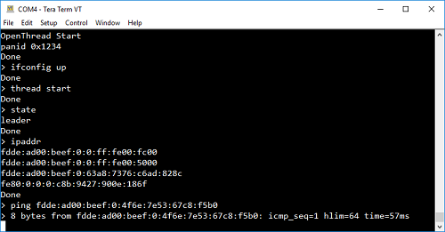fdde:ad00:beef:0:63a8:7376:c6ad:828c. Type ping fdde:ad00:beef:0:4f6e:7e53:67c8:f5b0, it will ping the Linux host from CLI:Go to the Linux host, run a terminal and type ping6 fdde:ad00:beef:0:63a8:7376:c6ad:828c, it will ping the CLI from Linux host:
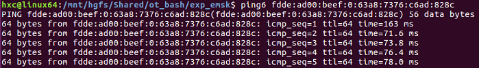
{kind=link}
{kind=link}